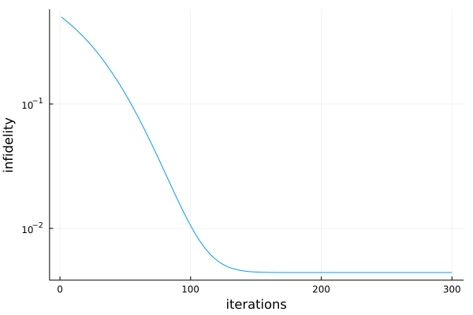
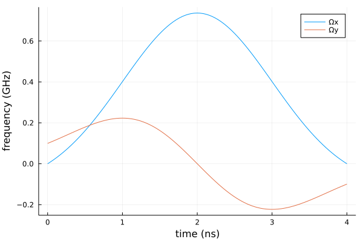

DRAG
In realization of quantum computing, two lowest energy levels are often singled out to represent a qubit. However, simple qubit control of these two levels fails at short time scales due to coupling and leakage to higher energy levels. Derivative removal by adiabatic gate (DRAG) is a simple analytic pulse expression devised to combat this leakage.
Let's consider the following Hamiltonian of a three level system that approximates a transmon qubit in a frame rotating at the qubit frequency
\[H(t) = \Delta|2\rangle\langle2| + \frac{\Omega_x(t)}{2}\sum_{j = 1}^{2}\sigma^x_{j, j-1} + \frac{\Omega_y(t)}{2}\sum_{j = 1}^{2}\sigma^y_{j, j-1},\]
where operators $\sigma^x_{j, j-1} = \sqrt{j}(|j\rangle\langle j-1| + |j-1\rangle\langle j|)$ and $\sigma^y_{j, j-1} = i\sqrt{j}(|j\rangle\langle j-1| - |j-1\rangle\langle j|)$ couple adjacent energy levels.
using Sisyphus
using QuantumOptics
using Flux
using Plots
using Random
using ProgressMeter
ProgressMeter.ijulia_behavior(:clear)We define our Hamiltonian using QuantumOptics.jl library.
Δ = -0.3 * 2π # in GHz
bs = NLevelBasis(3)
H0 = Δ * transition(bs, 3, 3)
Hx = transition(bs, 2, 1) + transition(bs, 1, 2) + √2 * (transition(bs, 3, 2) + transition(bs, 2, 3))
Hy = 1im * (transition(bs, 2, 1) - transition(bs, 1, 2) + √2 * (transition(bs, 3, 2) - transition(bs, 2, 3)))To induce transitions $|0\rangle \leftrightarrow |1\rangle$, one can use the following Gaussian shaped parameterized DRAG pulses
\[\Omega_x(t) = A \left( \exp\left[ -\frac{\left(t-T/2\right)^2}{2\sigma^2} \right] - \exp\left[-\frac{T^2}{8\sigma^2}\right] \right),\]
\[\Omega_y(t) = \frac{\beta}{\Delta}\frac{\mathrm{d}\Omega_x(t)}{\mathrm{d}t}.\]
We set the spread of Gaussian to be a quarter of the total pulse duration $\sigma = T / 4$, while we keep the amplitudes $A$ and $\beta$ as free parameters to be optimized.
T = 4.0 # in ns
σ = T / 4
Ωx(A, t) = A * (exp(-(t - T / 2)^2 / (2σ^2)) - exp(-T^2 / (8σ^2)))
Ωy(A, β, t) = -2 * (β / Δ) * A * (t - T / 2) * exp(-(t - T / 2)^2 / (2σ^2))
coeffs(p, t) = [Ωx(p[1], t) / 2, Ωy(p[1], p[2], t) / 2]
# initial parameters
θ = [0.0, 0.0]Next, we define a cost function to be the infidelity between current and target states.
cost = CostFunction((x, y) -> 1.0 - abs2(x'*y))We define define the desired unitary transformation as $R_x(\pi/2)$ rotation in the subspace spanned by the states $|0\rangle$ and $|1\rangle$.
trans = UnitaryTransform([nlevelstate(bs, 1), nlevelstate(bs, 2)],
[[1.0 -1.0im];[-1.0im 1.0]]/√2)Finally, we define and solve the corresponding quantum optimal control problem.
tspan = (0.0, T)
H = Hamiltonian(H0, [Hx, Hy], coeffs)
prob = QOCProblem(H, trans, tspan, cost)
@time sol = solve(prob, θ, Adam(0.01); maxiter=300)[32mProgress: 100%|█████████████████████████████████████████| Time: 0:01:40[39m
[34m distance: 0.004422744991859184[39m
[34m constraints: 0.0[39m
119.669943 seconds (98.44 M allocations: 5.565 GiB, 71.11% gc time, 28.79% compilation time)plot(sol.distance_trace, yscale=:log10, xlabel="iterations", ylabel="infidelity", legend=false)
ts = collect(0:T/100.0:T)
plot(ts, Ωx.(sol.params[1], ts), label="Ωx")
plot!(ts, Ωy.(sol.params[1], sol.params[2], ts), label="Ωy")
plot!(xlabel="time (ns)", ylabel="frequency (GHz)")